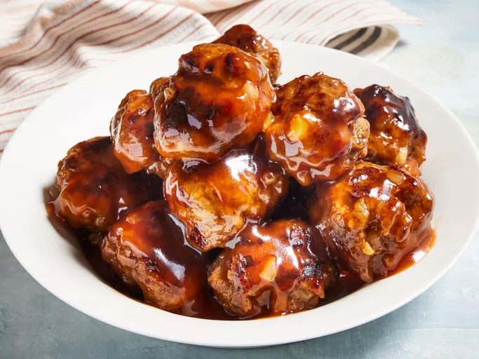

Sweet and Sour Meatballs

Description
This sweet and sour meatball recipe came from my mother-in-law. I got it
shortly after I was married and now it is a favorite of our kids. I like
to serve it over rice.
Ingredients
- 1 pound ground beef
- 1 cup dry bread crumbs
- 1 onion, chopped
- 1 egg
- salt and pepper to taste
- Sweet and Sour Sauce:
- 1 cup brown sugar
- 1 cup water
- ½ cup ketchup
- ½ cup cider vinegar
- 2 tablespoons cornstarch
- 2 tablespoons soy sauce
Steps
-
Make meatballs: Mix beef, bread crumbs, onion, egg, salt, and pepper
together in a large bowl until well combined.
- Shape mixture into 1 1/2-inch diameter balls.
-
Cook meatballs in a large nonstick skillet over medium heat until
evenly browned and cooked through.
-
Make sauce: Mix brown sugar, water, ketchup, vinegar, soy sauce, and
cornstarch together in a medium bowl until smooth.
-
Pour sauce over meatballs. Reduce heat to low and simmer until sauce
is thick, 3 to 5 minutes.
- Serve hot and enjoy!